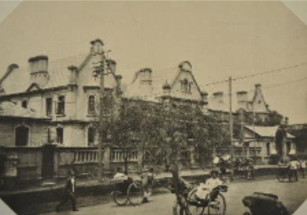
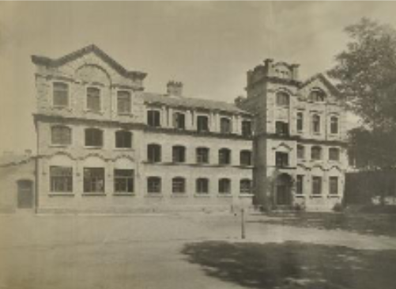
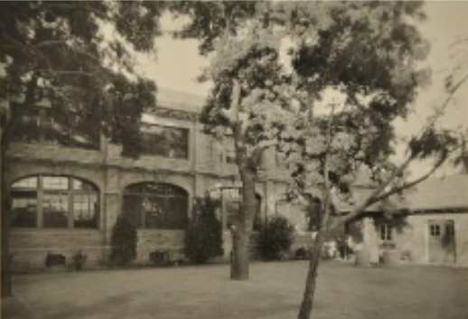
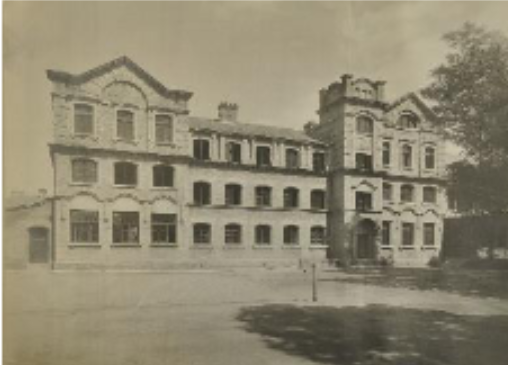
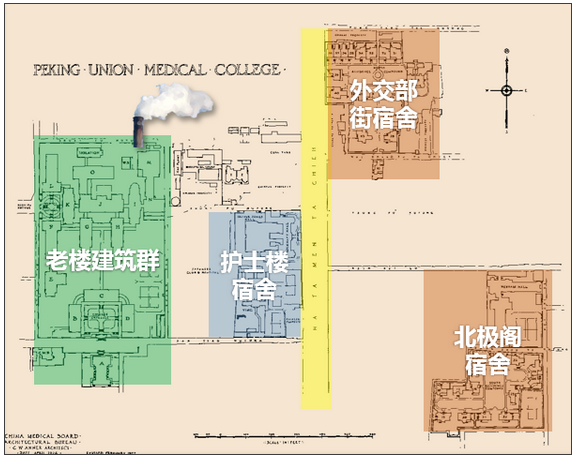
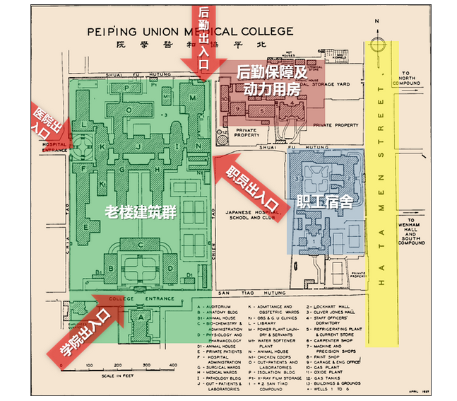

1906 · EARLY CAMPUS
娄公楼 Lockhart Hall
建筑史研究记载，娄公楼（Lockhart Hall）于 1906 年建成，是协和医学堂早期校舍之一。文献描述其平面呈“山”字形、坐西朝东、主入口临东单北大街、地上二层，1986 年拆除。

BEFORE THE OLD CAMPUS
在 1917 年老院区建筑群奠基之前，协和医学堂已陆续建有早期校舍。点击建筑图片可查看原图；楼名与年代依据建筑史研究整理，图片档案出处及授权仍待核实。
1906 · EARLY CAMPUS
建筑史研究记载，娄公楼（Lockhart Hall）于 1906 年建成，是协和医学堂早期校舍之一。文献描述其平面呈“山”字形、坐西朝东、主入口临东单北大街、地上二层，1986 年拆除。

1907 · EARLY CAMPUS
建筑史研究记载，哲公楼（Oliver Jones Hall）于 1907 年建成，平面呈“一”字形、坐北朝南、地上三层，北邻东帅府胡同，位于娄公楼以西并与其北部相连，1925 年拆除。其名称与位置说明了新院区建成之前医学堂的发展轨迹。

1912 · EARLY CAMPUS
建筑史研究记载，文海楼（Wenham Hall）于 1912 年建成，平面呈“L”形、坐北朝南，北邻新开路胡同，1925 年拆除。它与娄公楼、哲公楼共同构成协和医学堂早期校舍的建筑线索。

这张早期校舍影像尚未能与娄公楼、哲公楼或文海楼中的某一栋可靠对应，因此在此单独展示，不作具体楼名认定。

两张历史规划图可辅助理解早期校舍与院区建筑群的空间关系；原始档案出处与制图信息待进一步核实。


参考：李美慧，《北京协和医院各历史阶段建筑设计研究》[D]，北京建筑大学，2020。查看完整参考文献与图片来源。